第 1 页 · 1 语音识别
1 语音识别
模块3：感知人机语音交互


第 2 页 · 手机美图
手机美图
视频监控
语音互动机器人
智能音箱

为啥机器能说话？
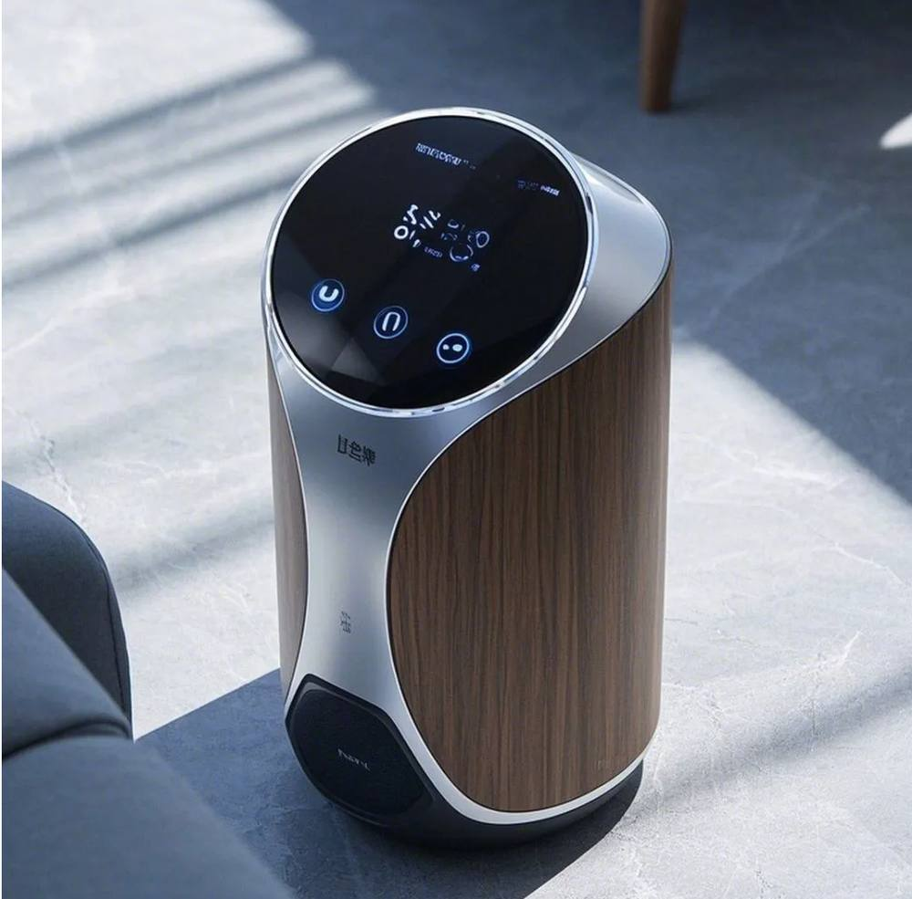
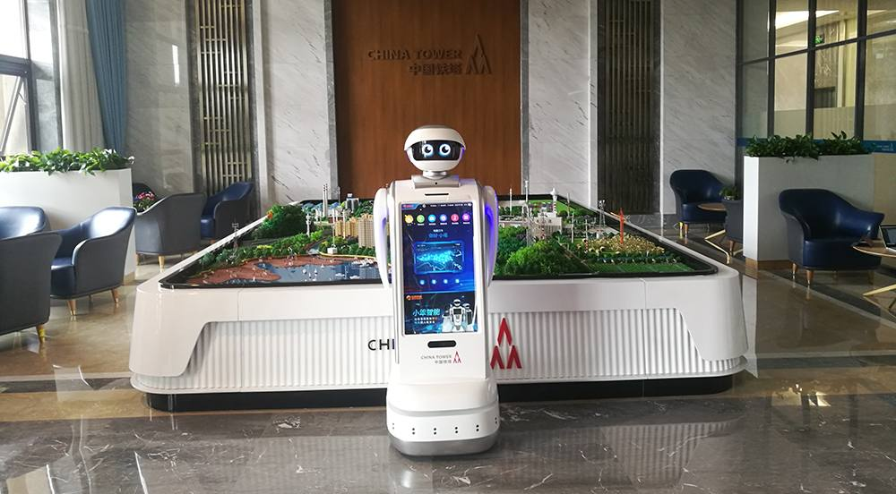
第 3 页 · 一、语音识别简史
一、语音识别简史
语音识别（Speech Recognition，SR）是指将人说的话自动转换为文字或机器可以理解的指令的过程。
1952年，贝尔实验室研究出世界上第一个识别10个英文数字发音的识别系统
1960年，英国的德内斯等人成功研究出第一个计算机语音识别系统
20世纪80年代后，研究思路由基于标准模板匹配的技术转向基于统计模型的技术
2010年之后，基于深度神经网络和分布式计算成为语音识别技术的主流
第 4 页 · 机器学习的一般流程
机器学习的一般流程
二、语音识别过程
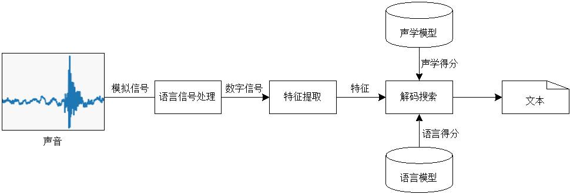
五个关键要素
语音信号处理
特征提取
声学模型
语言模型
解码搜索
第 5 页 · 二、语音识别过程
二、语音识别过程
1、语音信号处理
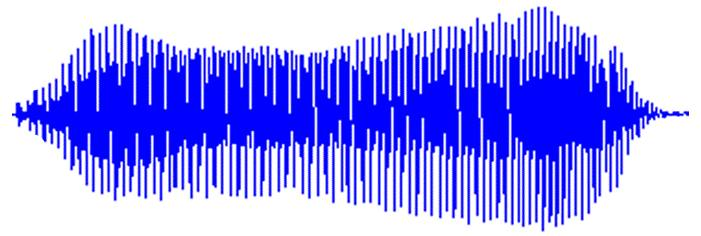
连续的模拟信号
时间上离散的数字信号
第 6 页 · 二、语音识别过程
二、语音识别过程
提取出声音最具辨识度的主要成分，过滤掉其他无关信息
特征提取四步骤

预加重

分帧

加窗和傅里叶转换

提取特征
2、特征提取
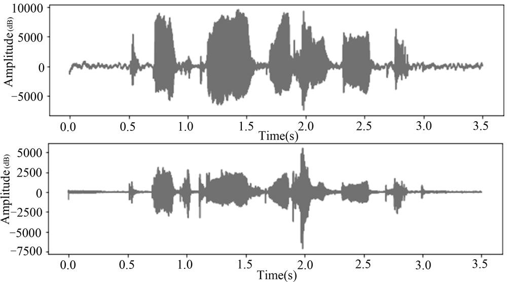
第 7 页 · 二、语音识别过程
二、语音识别过程
提取出声音最具辨识度的主要成分，过滤掉其他无关信息

特征提取四步骤

预加重

分帧

加窗和傅里叶转换

提取特征
2、特征提取
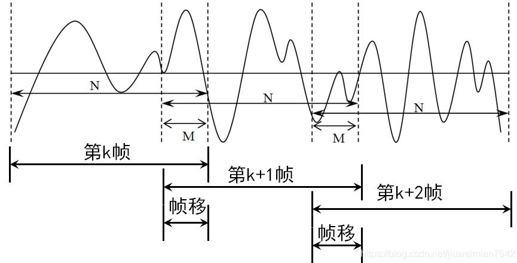
第 8 页 · 二、语音识别过程
二、语音识别过程
提取出声音最具辨识度的主要成分，过滤掉其他无关信息

特征提取四步骤

预加重
分帧

加窗和傅里叶转换

提取特征
2、特征提取
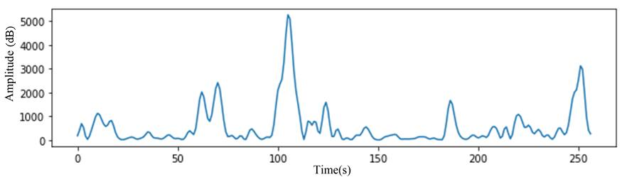
语音能量谱
第 9 页 · 二、语音识别过程
二、语音识别过程
提取出声音最具辨识度的主要成分，过滤掉其他无关信息

特征提取四步骤

预加重

分帧

加窗和傅里叶转换

提取特征
2、特征提取
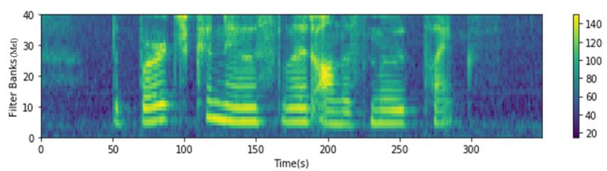
各帧的FBank特征频谱图，即特征图
第 10 页 · 二、语音识别过程
二、语音识别过程
3、声学模型
声学特征
建模单元
若干音素
隐马尔可夫声学模型
语音特征向量
声学得分
第 11 页 · 二、语音识别过程
二、语音识别过程
4、语言模型
音素
文字的概率
5、解码搜索
声学
模型
语言
模型
发音
词典
解码搜索
语音
特征
文本
第 12 页 · 三、语音识别新技术及应用
三、语音识别新技术及应用
端到端一体化模型
1
语音识别新技术
大规模自监督预训练
2
噪声鲁棒与自适应前端
3
多模态融合
4
第 13 页 · 三、语音识别新技术及应用
三、语音识别新技术及应用
语音识别新应用
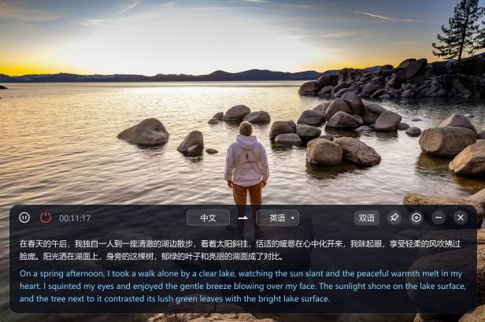
实时语音生成字幕
语音助手
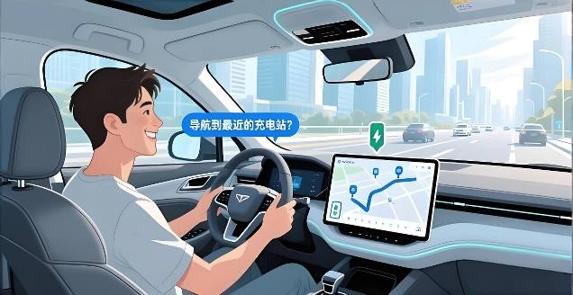
智能车载语音控制
门诊病历语音转写
第 14 页 · 三、语音识别新技术及应用
三、语音识别新技术及应用
语音识别新应用
仿生机器人
ASR支持在线学习
智能话筒
声纹认证
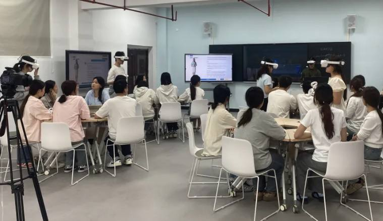
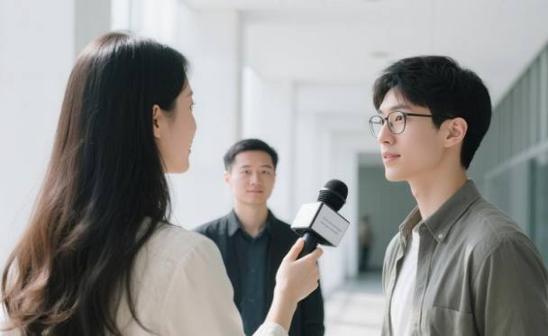
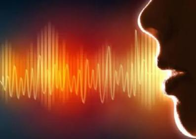
第 15 页 · 畅享语音识别的新场景
畅享语音识别的新场景

讨论语音识别在未来的新场景应用
| 场景 | 用于描述 | 意义或价值 |
| ①新医疗记录助手 | ||
| ②居家陪聊机器人 | ||
| ③儿童智能图书 | ||
| ④车载智能助手 | ||
| ⑤智能会议屏 | ||
| …… |
第 16 页 · 学生分享及教师点评
学生分享及教师点评

| 分享要点 | 分值 | 计分 | 教师点评 |
| 1、你的想法来自哪里？ | 10 | 头脑风暴、独立思考 | |
| 2、你的研讨是否有其他学生参与？ | 10 | 集思广益、团结协助 | |
| 3、语音识别技术对场景应用的革命性影响？ | 30 | 积极思考、敢于天马行空 | |
| 4、如果要选择一个语音技术最有影响或价值的场景，你的选择是？ | 20 | 价值思维，前瞻能力 | |
| 5、语音技术发展新的方向 | 20 | 打破常规，展望未来， | |
| 6、其它（含逻辑、表情、主动、清晰、流畅、自信等） | 10 | 能说、亲和、善用、精技 |
第 17 页 · 子任务3：语音提示处理
子任务3：语音提示处理

掷地有声
创享生活